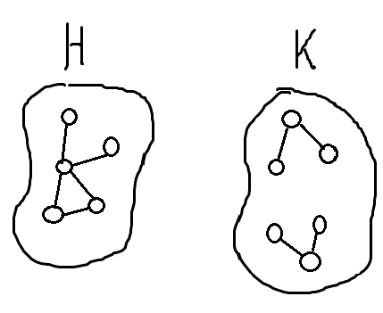
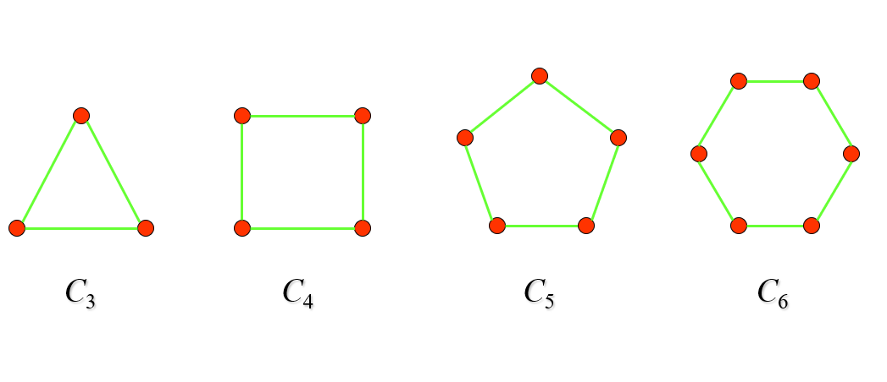
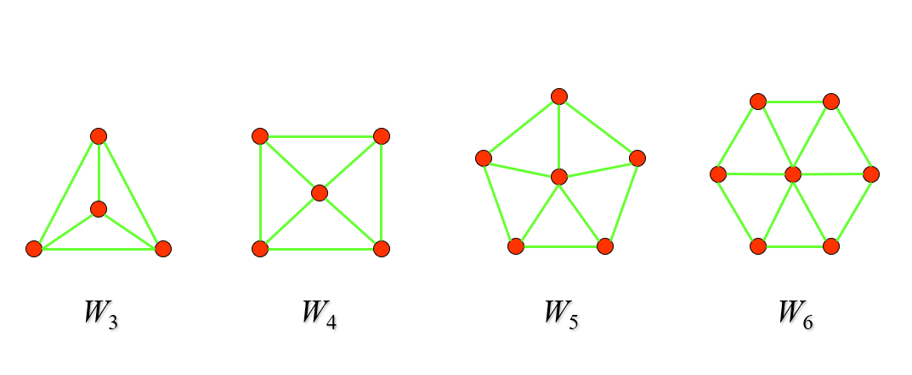
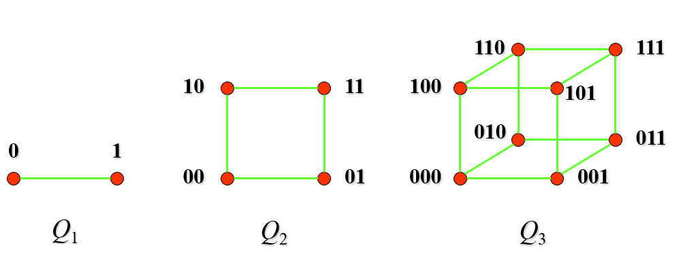
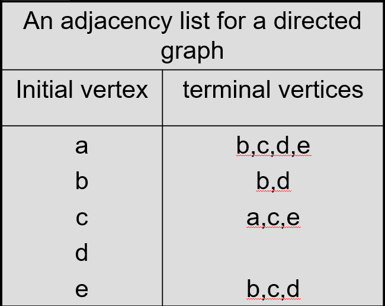
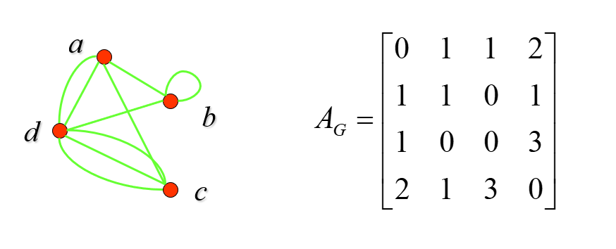
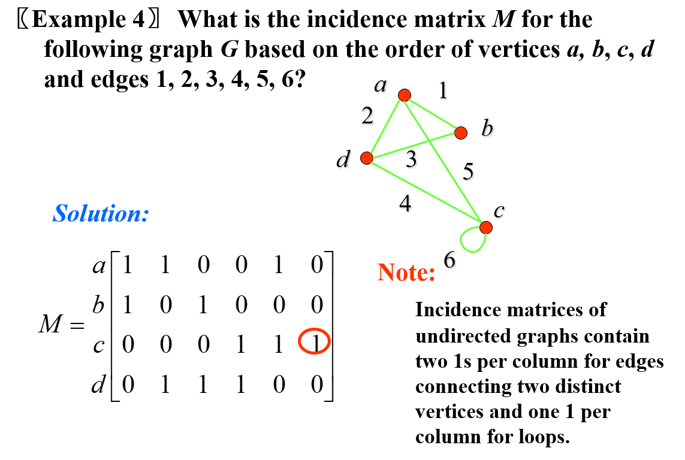

CH 10 : Graphs¶
约 2658 个字 预计阅读时间 13 分钟
10.1 Graphs and Graphs Models¶
- Simple graph: 同一对顶点之间只有一条边
- Multigraph: 同一对顶点之间可能有多条边
- Pseudograph: 可能存在自环、同一对顶点之间可能有多条边
- Path: \(\{v_0 ,v_1\},...,\{v_{n-1} ,v_{n}\}\) ，长度为n的路径
- 长度为0的路径只含一个点
- Circuit: 首尾是同一个点的path
证明Show that for any simple graph G , one of G and G' is connected

Case 1: Both u𝑢 and v𝑣 lie in H𝐻. Let w𝑤 be a vertex of K𝐾. Since u𝑢 and v𝑣 are not adjacent to w𝑤 in G𝐺, they must both be adjacent to w𝑤 in G′𝐺′, so u−w−v𝑢−𝑤−𝑣 is a u−v𝑢−𝑣 path in G′𝐺′. Case 2: u𝑢 is in H𝐻 and v𝑣 is in K𝐾. In this case, u𝑢 and v𝑣 are not adjacent in G𝐺, so they must be adjacent in G′𝐺′. In any case, we have a u−v𝑢−𝑣 path in G′𝐺′, so G′𝐺′ is connected.
10.2 Graph Terminology and Special Types of Graphs¶
- 对于无向图，\(\Sigma _{v\in V} deree(v)=2e\) （自环算增加两个degree）
- 因此有引理：无向图拥有奇数个degree的vertex一定有偶数个
- 对于有向图，\(\Sigma _{v\in V} deree^+(v) = \Sigma _{v\in V} deree^-(v) =e\)
Some Special Simple Graphs¶
- Denoted as \(K_n\)
- Has \(\frac{n(n-1)}{2}\) edges

- Denoted as \(C_n\) where \(n\gt 2\) 
- Denoted as \(W_n\) where \(n\gt 2\) 
- Denoted as \(Q_n\)
- 每个顶点之和相差一位(按照bit position)的数相连
- 含有 \(2^n\) Vertices , \(\frac{n2^n}{2}\) edges 
Bipartite Graphs 二部图¶
- 节点集可以分成两个 不相交 的子集，使得每条边都连接两个不同子集中的结点。即在同一个子集中的结点之间没有边相连
Example

Theorem A simple graph is bipartite if and only if it is possible to assign one of two different colors to each vertex of the graph so that no two adjacent vertices are assigned the same color.
一个Simple Graph为二部图当且仅当可以分配两种颜色给所有vertex使得每一个相邻的vertex颜色都不同
Regular Graph¶
A simply graph is called regular if every vertex of this graph has the same degree. 所有vertex的degree相同
Note
A regular graph is called n-regular if every vertex in this graph has degree n.
如 \(K_n\) 就是 (n-1)-Regular
10.3 Representing Graphs and Graph Isomorphism¶

自环也是1  无向图的邻接矩阵是对称的
以邻接边表示图 
Isomorphism of Graphs 图的同构¶
- Definition：对于两个Simple Graph
G_1和G_2，若对于G_1的任意相邻的Vertex，a和b，存在一个Bijection Function，使得 f(a)和f(b)都在G_2中且相邻，则称这个 function 是 Isomorphism - Invariant in isomorphic graphs ： (同构不变量)
- Vertex的个数
- Edge的个数
- 对应Vertex的Degree
- 如果一个图是Bipartite的，那么另一个肯定也是
- 如果一个图是Complete的，那么另一个肯定也是
- 如果一个图是一个Special Graph，如Wheel，那么另一个也是
10.4 Connectivity 连通性¶
- Simple path：不二次经过同一个edge的path
- 连通：任意一对点之间都有 simple path 相连
- Cut vertex (割点): 从连通图里删除割点，就产生不连通的子图
- Cut edge/bridge (割边，桥): 从连通图里删除割边，就产生不连通的子图
- Connected Component：最大连通子图

Counting Path：The number of different paths of length r from \(v_i\) to \(v_j\) 等于 \(A^r[i,j]\)
Example

- 对于有向图，还分为强连通和弱连通
- Strongly connected：严格按方向连通
- Weakly connected：将有向图看作无向图看待
10.5 Euler and Hamilton Paths¶
Euler Path and circuit¶
- Euler Path: 包含 每条边 的 simple path
- Euler Circuit: 包含每条边的 simple circuit
- Euler Graph: 包含 Euler Circuit 的图
- 一个连通图拥有 欧拉回路 当且仅当每个Vertex都是偶度数
- 一个连通图拥有 欧拉路径 当且仅当仅有两个Vertex是奇度数
Example

- 有 欧拉回路 当且仅当：
- 弱连通
- 每个点的出度、入度相等
- 有 欧拉路径 当且仅当：
- 弱连通
- 有且仅有两个点，一个入度比出度大 1，一个出度比入度大 1
Example

Hamilton path and circuit¶
Info
如无特别说明，讨论哈密顿回路时皆为 无向图
- Hamilton Path: 包含 每个节点（仅一次） 的 simple path
- Hamilton Circuit: 除了起点和终点包含两次，其他每个节点包含一次的 simple circuit
- Hamilton Graph: 含 Hamilton Circuit 的图
Hamilton circuit 判断条件¶
- Dirac Theorem (狄拉克定理): 如果 𝐺 是有 𝑛 个顶点的简单图，其中 𝑛≥3，并且 𝐺 中每个顶点的度都至少为 \(\frac{n}{2}\)，则 𝐺 有哈密顿回路
- Ore Theorem (欧尔定理): 如果 𝐺 是有 𝑛 个顶点的简单图，其中 𝑛≥3，并且对于 𝐺 中每一对不相邻的顶点 𝑢 和 𝑣 来说，都有 deg(𝑢)+deg(𝑣)≥𝑛，则 𝐺 有哈密顿回路
- 狄拉克定理可以看做欧尔定理的推论
- 存在哈密顿图既不满足 Dirac 也不满足 Ore 的条件
- 如果一个图存在哈密顿回路，则该图是二连通的
- 二连通（biconnected）是指一个无向图中，如果从图中删除任意一个顶点，剩余的图仍然是连通的。也就是说，图中不存在割点
- 除了不存在割点外，哈密顿图也不存在割边
- 显然哈密顿图是一个有包含所有顶点的圈的图，删除掉这个圈上任一顶点或者任一边，哈密顿图仍然连通，删除圈外边则对圈无影响，因此哈密顿图不存在割边
- 换言之，有割点的图一定不是哈密顿图
- 如果一个图存在哈密顿回路，则每个点的度都大于 1
- 如果一个图中存在哈密顿回路，并且该图中有一个度数为 2 的顶点，则与该顶点相连的两条边都必须属于哈密顿回路
- 在构造哈密顿回路时，如果已经经过了一个顶点，则除了用于构造哈密顿回路的两条边之外，与该顶点相连的其他边都可以不再考虑（因为哈密顿回路只能经过每个顶点恰好一次）
- 删除哈密顿图 n 个Vertex及其相连的边，则剩余部分拥有的Connected Components的数量一定小于等于n
Example

上图不含有哈密顿回路，因为删除圈出的五个顶点后，此图剩余六个Connected Components，不符合哈密顿图的必要条件
如何手画Hamilton Circuit
 以此图为例子，由于点G、A、E、D都仅有两个相邻边，因此这四个顶点及其相邻边一定在哈密顿回路中，此时回路包含了全部顶点，由于C已经被纳入回路中，删除CF边和BC边，剩下的边和点就是哈密顿回路
以此图为例子，由于点G、A、E、D都仅有两个相邻边，因此这四个顶点及其相邻边一定在哈密顿回路中，此时回路包含了全部顶点，由于C已经被纳入回路中，删除CF边和BC边，剩下的边和点就是哈密顿回路
Hamilton Path 判断条件¶
- G is connected
- 最多有两个顶点的度数为1
- 因为哈密顿路径的起点和终点的度数为 1，而路径上的其他顶点都至少有两条边与之相连，因此它们的度数至少为 2
10.6 Shortest Path Problems¶
Dijkstra 算法¶
用dfs(bfs也可)，记录最小路径长度。
当当前长度小于历史长度，就更新；否则结束dfs。
当到达Destination，结束dfs
正经的方式：
- 1.初始化：将所有Vertex的最短距离初始化为无限大，即 \(d[v]=\infty\)
- 2.建立一个优先队列(Heap)，用于保存值不为无限大的且还未确定最短距离的Vertex，并且将起点 \(d[s]=0\) 加入
- 3.从Heap中取出值最小的顶点u，对于与其相邻的每个顶点v，若 \(d[u]+w(u,v)\lt d[v]\) ，则更新 \(d[v]\) 的值并将v加入Heap
- 4.重复3直到终点被从Heap中取出。结果存储在 \(d[Destination]\) 中
10.7 Planar Graphs 平面图¶
- Definition: 若可以在平面中画出一个图而边没有任何交叉（其中边的交叉是表示边的直线或弧线在它们的公共端点以外的地方相交），则这个图是平面图
Euler Formula¶
若G是 Connected Planar Simple Graph，则 \(r=e-v+2\)
Definition 假如R是Connected Planar Simple Graph的一个Region，则R边界上的Edges的数量被称为 Degree of R with Notation \(Deg(R)\)
- \(\sum_{v _i\in V}deg(v_i) =\sum_{r _i\in R}Deg(r_i) =2e\)
- 如果一个边为 Cut Edge 的话，它对 \(Deg(R)\) 的贡献度为2
Example
 \(Deg(R_1) =12\ \ Deg(R_2)=4\)
\(Deg(R_1) =12\ \ Deg(R_2)=4\)
推论：
- 如果G是Connected Planar Simple Graph，且 \(v\ge 3\) ，则 \(e\le 3v-6\)
- 证明要点：\(Deg(R)\ge 3\) / \(2e=\sum_{r _i\in R}Deg(r_i) \ge 3r =3(e-v+2)\)
- 因此 \(K_5\) 不是平面图
- 如果G是Connected Planar Simple Graph，那么G一定含有一个Degree不超过5的Vertex
- 如果G是Connected Planar Simple Graph，且 \(v\ge 3\) 以及没有长度为3的环，那么 \(e\le 2v-4\)
- \(Deg(R)\ge 4\)
Kuratowski's Theorem¶
- Elementary Subdivision (初等细分)：若一个图是平面图，则通过删除一条边 {𝑢,𝑣} 并且添加一个新顶点 𝑤 和两条边 (𝑢,𝑤) 与 (𝑤,𝑣) 获得的任何图也是平面图。也即，平面图中的一条边通过添加一个点的方式变成两条边，不改变其是平面图的性质
- Homeomorphic (同胚)：相同的图通过「初等细分」得到不同的图，称其之间同胚
- Theorem：一个图是 非平面图 当且仅当其包含一个同胚于 \(K_5\) 或 \(𝐾_{3,3}\) 的子图
Example
 上图包含同胚于 \(K_5\) 的子图，因此它不是平面图
上图包含同胚于 \(K_5\) 的子图，因此它不是平面图
 上图包含同胚于 \(K_{3,3}\) 的子图，因此它不是平面图
上图包含同胚于 \(K_{3,3}\) 的子图，因此它不是平面图
10.8 Graph Coloring¶
- Dual Graph (对偶图)：平面图中，一个面对应一个点，若两个面相邻，则两个点之间有边。这样得到的图称为对偶图

- Coloring (着色)：指对该图的每个顶点都指定一种颜色，使得没有两个相邻的顶点颜色相同
- Chromatic Number of A Graph (着色数)：着色这个图所需要的最少颜色数，记作 𝜒(𝐺)
- 一般来说，得到 𝜒(𝐺)=𝑘 的方法是证明可以用 𝑘 个颜色着色，而 𝑘−1 则不能着色
- 𝜒(𝐺) of \(𝐶_𝑛\): 𝑛 为奇数，为 3，反之为 2
- 𝜒(𝐺) of \(𝐾_𝑛\): 𝑛
- 若简单图的着色数为 2，说明其是二分图
- 四色定理：平面图 的着色数不超过 4，非平面图可以有任意大的着色数